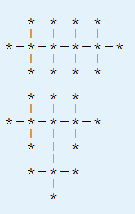

一行用短线（减号）连接的两个整数N和M。
小强不像他的朋友阿米巴那样热爱化学；相反，小强最喜欢的事情是数数，特别有的时候喜欢数树。
小强发现来自自然界的一类无根树很特别：它们的所有非叶子节点的度数都是一样的。小强管这种无根树叫做正则无根树。例如，14个点的度数限制为4的正则无根树有以下２种：

14-4
2
对于所有的测试点，1<=N，1<=M，保证答案不是0。
对于第1个测试点，M=1
对于第2个测试点，M=2
对于第3~5个测试点，M=3，N<=202，其中，对于第3、4个测试点，N<=22
对于第6~9个测试点，M=4，N<=902，其中，对于第6个测试点，N<=32
对于第10个测试点，N=6002，M=4。
一共10个测试点